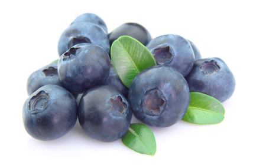

Highbush blueberries (Vaccinium corymbosum, and others)

Mating & Breeding System: Vaccinium is a large genus of plants with many cultivated species (see also Cranberry). While lowbush blueberries are a very important crop in other parts of Canada, in Ontario the majority of cultivated blueberries are highbush species (V. corymbosum, also V. australe, V. atrococeum).
Blueberry flowers are bell-shaped and pendant, and in general, bees are the only insects that can pollinate them, due to the flowers’ need for "buzz pollination". In order to achieve pollination, a pollinator must grasp the stamens with its mandibles and rapidly vibrate its flight muscles in order to free the pollen through the small pores in the anthers. Not all bees are capable of this type of action, and those that cannot buzz pollinate are ineffective blueberry pollinators. Honey bees are able to "drum" on the anthers with their legs and collect some pollen, but they gather far fewer grains than bees that buzz pollinate.
Some varieties (i.e., Bluecrop) are self-compatible and do not show a significant gain from cross-pollination. This may not be true for all varieties, and more testing is needed to identify which varieties perform best with a pollenizer variety nearby. Cross-pollination is likely the rule, as male and female structures tend to mature at different times within a given flower, and the pendant form of the flower discourages selfing via wind or gravity.
Pollination, Quality & Yield: Benefits of insect pollination include more flowers producing marketable fruit and larger berries, although this observation does not hold across all varieties. It is the quantity of pollen delivered by pollinators that improves fruit set, fruit weight, and number of viable seeds, and it does not seem to matter if the pollen is from the same flower or a different flower in at least some cultivars. (One exception is Vaccinium corymbosum, in which self-pollinated flowers were found to be more likely to abort, or to have poorly developed ovules, than those that were cross-pollinated.)
Some cultivars are parthenocarpic, which means they produce fruit without pollination (the berry is seedless). Many of these berries are not marketable.
Total fruit set is improved whether wild or managed bees are present, and increases with increasing with bee abundance.
Pollination Recommendations: Honey bees are not capable of buzz pollination and generally do not seek pollen from blueberry. Thus, any pollen collected or transferred by honey bees is incidental to their nectar foraging activities. Recommended stocking rates for honey bees depends on the variety of blueberry (1-7.5 per hectare), and hives should be placed at 5-25% of full bloom.
Bumble bees and other species of wild bees are the most effective pollinators of blueberry. Numerous wild bee species are often active in highbush blueberry fields during bloom. Wild pollinator activity may be concentrated along field edges, because they only travel a short distance from their nesting habitat. In a small field, wild bees can provide most of the pollination needed. In large fields with a lower ratio of edge habitat to field area, wild bees play a smaller role. These larger fields are typically supplemented with honey bees.
Blueberry growers are encouraged to provide alternate forage for wild bees, particularly plants that flower before and after the blueberry, at the edges of fields and even in the middle of large fields. Artificial nesting sites such as bundle of reeds, drilled wooden blocks, and untilled dry soil can increase wild bee populations in the long term.
References
Dogterom, M.H., Winston, M.L., & Mukai, A. 2000. Effect of pollen load size and source (self, outcross) on seed and fruit production in highbush blueberry cv. 'Bluecrop' (Vaccinium corymbosum; Ericaceae). American Journal of Botany87:1584-1591.
Ehlenfeldt, M.K. 2001. Self- and cross-fertility in recently released highbush blueberry cultivars. HortScience 36:133-135.
Huang, Y.H., Johnson, C.E., Lang, G.A., & Sundberg, M.D. 1997. Pollen sources influence early fruit growth of southern highbush blueberry. Journal of the American Society for Horticultural Science 122:625-629.
Isaacs, R. & Kirk, A.K. 2010. Pollination services provided to small and large highbush blueberry fields by wild and managed bees. Journal of Applied Ecology 47:841-849.
Kevan, P.G. 1988. Pollination, crops and bees. OMAFRA publication 72.
MacKenzie, K.E. 1997. Pollination requirements of three highbush blueberry (Vaccinium corymbosum L.) cultivars.Journal of the American Society for Horticultural Science 122:891-896.
MacKenzie, K.E. & Eickwort, G.C. 1996. Diversity and abundance of bees (Hymenoptera: Apoidea) foraging on highbush blueberry (Vaccinium corymbosum L.) in Central New York. Journal of the Kansas Entomological Society 69 (suppl.):185-194.
Pritts, M.P. & Hancock, J.F. 1992. Highbush blueberry production guide. Northeast Region Agricultural Engineering Service NRAES-55.
Ratti, C.M., Higo, H.A., Griswold, T.L., & Winston, M.L. 2008. Bumble bees influence berry size in commercialVaccinium spp. cultivation in British Columbia. Canadian Entomologist 140:348-363.
Scott-Dupree, C.D., Winston, M., Hergert, G., Jay, S.C., Nelson, D., Gates, J., Termeer, B., & Otis, G. 1995. A guide to managing bees for crop pollination. Canadian Association of Professional Apiculturists, Aylesford, NS.
Tuell, J.K., Ascher, J.S., & Isaacs, R. 2009. Wild bees (Hymenoptera: Apoidea: Anthophila) of the Michigan highbush blueberry agroecosystem. Annals of the Entomological Society of America 102:275-287.
Vander Kloet, S.P. 1991. The consequences of mixed pollination on seed set in Vaccinium corymbosum. Canadian Journal of Botany 69:2448-2454.
Walton, N.J. & Isaacs, R. 2011. Influence of native flowering plant strips on natural enemies and herbivores in adjacent blueberry fields. Environmental Entomology 40:697-705.